由侯孝贤监制、刘杰执导，杨幂、郭京飞、李鸿其主演的《宝贝儿》于今日（10月19日）上映。这部被定义为纪实风格的文艺片，自宣布定档以来就备受关注。一是因为主演杨幂，《宝贝儿》是杨幂大银幕上第一部文艺作品；二是因为它的故事和话题，缺陷新生儿。“如果我不完美，是否还是你的宝贝儿”，电影《宝贝儿》为这样一个不被主流社会关注的边缘人群提出发问。
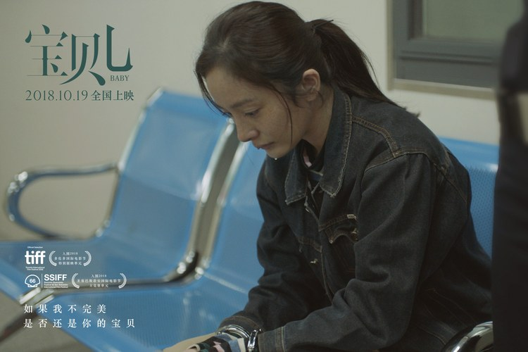
“我就是你们觉得应该死掉的小孩，我治好了”——江萌（杨幂 饰）
电影《宝贝儿》讲述的是一个因为严重先天缺陷而被父母抛弃的弃儿江萌，拯救另一个被父母宣判了“死刑”的婴儿的故事。主角江萌是串起影片故事的关键——江萌身上，集合了先天缺陷、弃婴、残疾、寄养等所有影片想要关注的现实话题。当江萌在医院看到一个和自己有着相同病征的新生儿，被她的家人放弃了治疗，江萌觉得看到了被弃的自己。“我就是你们觉得应该死掉的小孩，我治好了”，这是她会不顾一切去插手这个孩子的家庭、想让孩子活下来的主要原因。
本片的女主角杨幂自带流量和话题，但《宝贝儿》中江萌的造型一经亮相，还是引发了很多的争论。因为江萌先天的消化系统问题，脸上会有雀斑、沉淀的色块，杨幂甚至自己都表示，“从没有想过自己有一天会以这样形象出现在银幕上”。据刘杰导演称，江萌身上的衣服，是问片厂附近打工的小姑娘要到的，而脸上的雀斑，是用鞋油画的。杨幂进组时，还被导演要求素面朝天地去遛大街、逛弄贸市场，去了福利院、去了妇产医院的ICU病房，去真正地了解自己所要扮演的人群。“一开始会有拘谨，但慢慢发现只要不抱着杂乱的想法和目的，用最自然的方式融入人群，反而没了负担”，《宝贝儿》中的杨幂，完全地放下了明星包袱，“成为”了江萌，不仅在国际影展上收获了外媒的一致称赞，连向来毒舌的国内影评人也表示“杨幂的表演终于沉着了”。
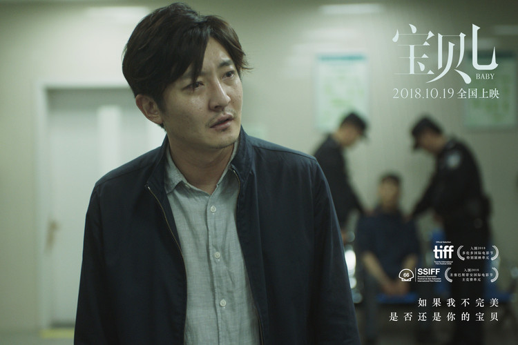
“你们想过她以后吗，她没得以后”——徐先生（郭京飞 饰）
电影《宝贝儿》中，站在江萌对立面的，是郭京飞饰演的孩子父亲徐先生。孩子父亲的形象是隐忍的，话语不多、情绪不重，但疲倦不堪的神态，让观众瞬间入戏，让观众愿意去了解这个孩子父亲做出如此“残忍”决定的原因。“你们想过她以后吗，她没得以后”是徐先生在警局面对众人质疑时爆发的一句反问。作为一个孩子父亲，想要孩子活下来，但更想要孩子活得体面、活得无忧无虑。在他的判断下，他的孩子如果活下来，最先面临的是反复手术的痛苦和不能完全治愈的现实，长大成人后则需要承受日常生活的不便、社会的歧视。一个平凡的普通人，要如何做到坚强地面对这些呢？
关于这个孩子父亲，导演曾经阐述说，“9年前，我的朋友生下一个重度脑积水的孩子，他被医生告知有三天时间做决定。这三天，我亲眼目睹了他的疲惫跟煎熬。做决定的那个晚上，他给我打了个电话，说‘哪怕搭上一辈子，也要让孩子活下来’。而他们两口子现在，从某种意义上来说，为了这个孩子确实搭上了本该有的人生。”也正是因此，导演对郭京飞有一个硬指标，就是要他三天三夜不睡觉。为了打磨这样一个崩溃绝望的父亲形象，郭京飞直到真的憔悴下来才开始拍戏。最终那场在警察局崩溃的戏，这个被别人唾弃成“杀人犯”的孩子父亲，真实到让人不忍看下去。
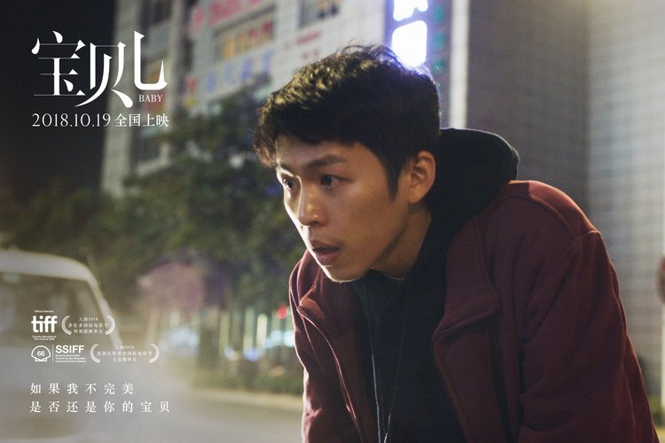
“如果她活下来，还不是和我们一样”——小军（李鸿其 饰）
《宝贝儿》中的江萌并不是完全孤独的，因为她的身边还有一个温暖的存在，就是李鸿其饰演的聋哑人小军。和江萌同样是弃儿的小军，不能说话、有点跛脚，他和江萌不一样，从寄养家庭搬出来后，靠给餐馆运送蔬菜为生。他想要简简单单的生活，想要和江萌在一起。当江萌找到小军，让他送自己去临终医院把小孩偷出来的时候，小军拒绝了。他说，“如果孩子活下来，还不是和我们一样”。生活之于小军是多沉重的负担，才让他说出如此令人心碎的话。
饰演小军的90后新生代男演员李鸿其，可以说是一颗正在冉冉升起的“文艺新星”。全程没有一句台词的他，展现出了远超其年龄的成熟“眼技”。“你会不自觉被他的眼神带走”，观众这样评价《宝贝儿》中的李鸿其。包括《宝贝儿》在内，李鸿其今年有三部新片入围国内外各大影展，另外两部分别是毕赣导演的《地球最后的夜晚》与何蔚庭导演的《幸福城市》。相信观众看完《宝贝儿》，都能记住“李鸿其”这个名字。
“如果我不完美，是否还是你的宝贝”，电影《宝贝儿》从三个人物的故事出发，为“生来不完美”的边缘人群作出有力发声。据卫生部报告，中国每年出生缺陷率为5.6%，每年有近100万个缺陷儿降生。这些孩子的命运一开始，就成为了一道选择题，但做选择的却从来不是他们自己。导演刘杰说，“关于这道题，我至今都没找到答案。所以我把它拍成电影，希望更多的人加入讨论，一起让无解的难题往解决的方向走去。”
纪实风格文艺片《宝贝儿》由侯孝贤监制、刘杰执导，杨幂、郭京飞、李鸿其主演，正在全国热映中。
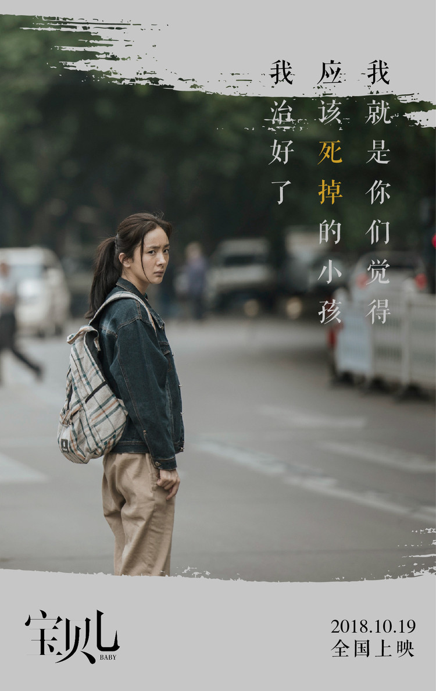
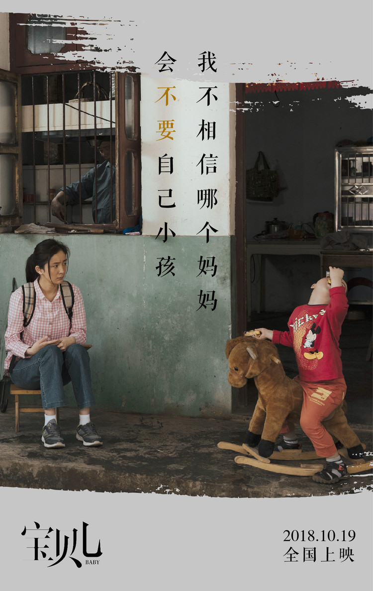
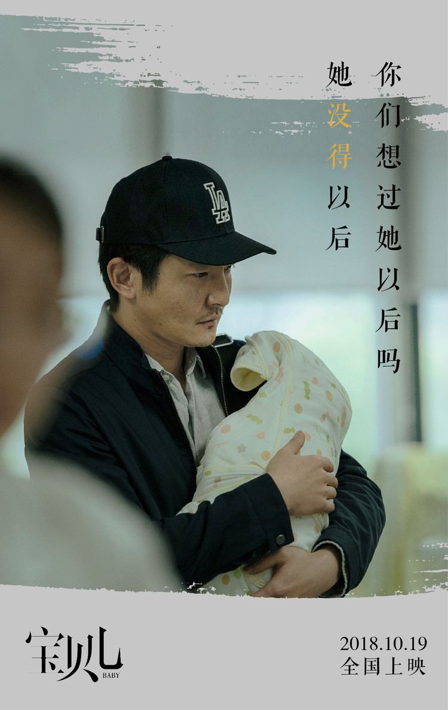
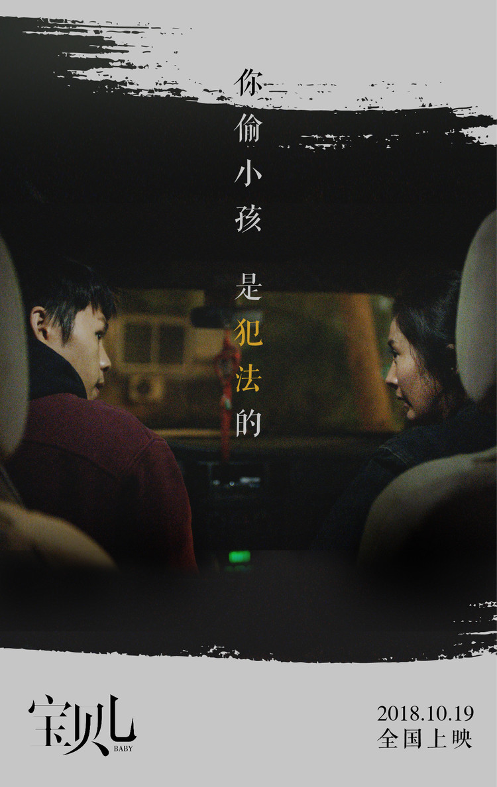
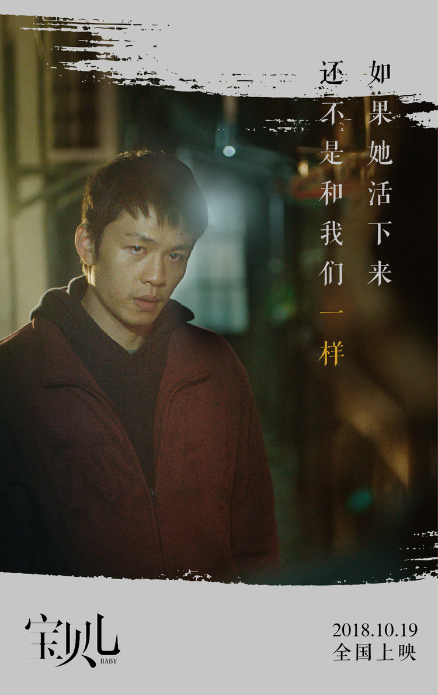
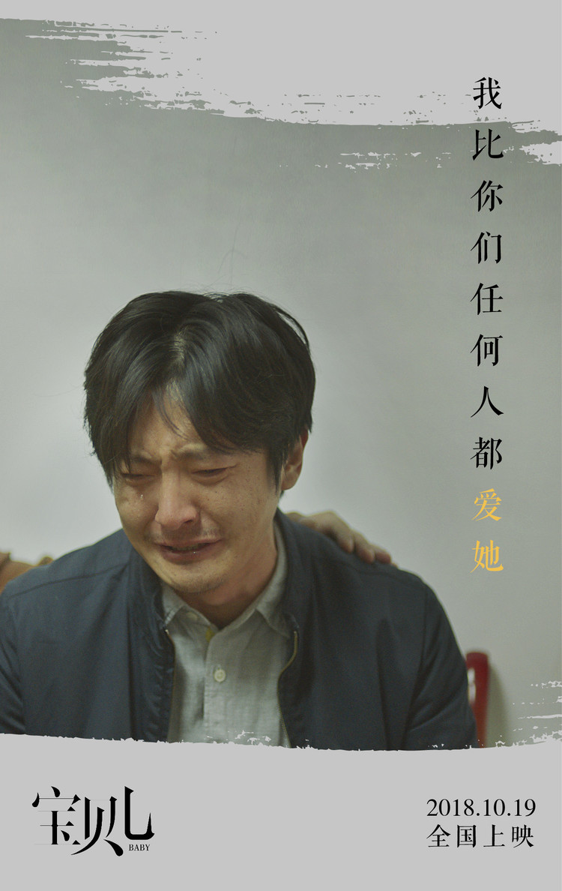
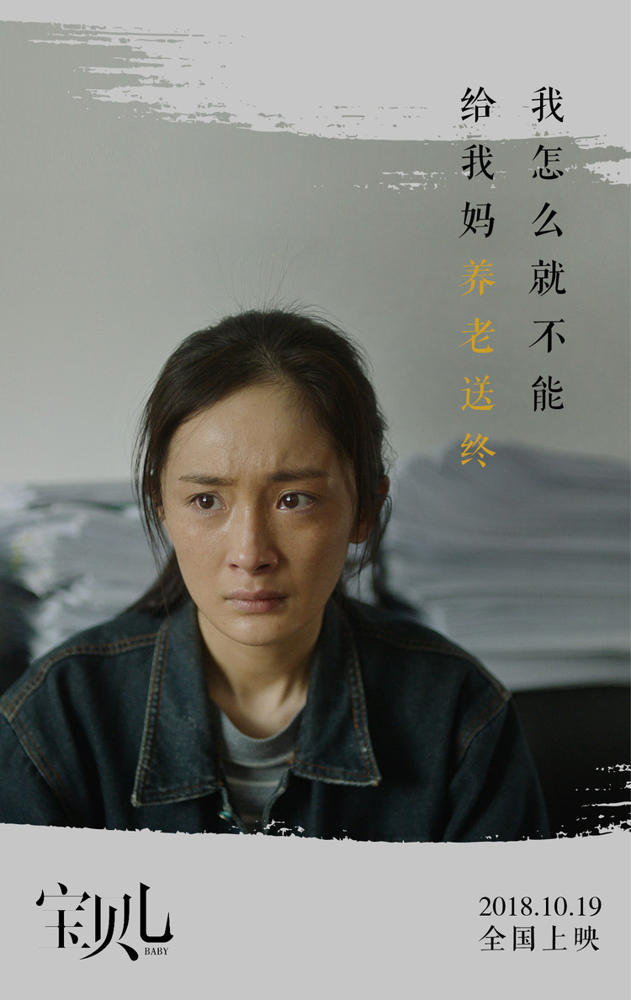
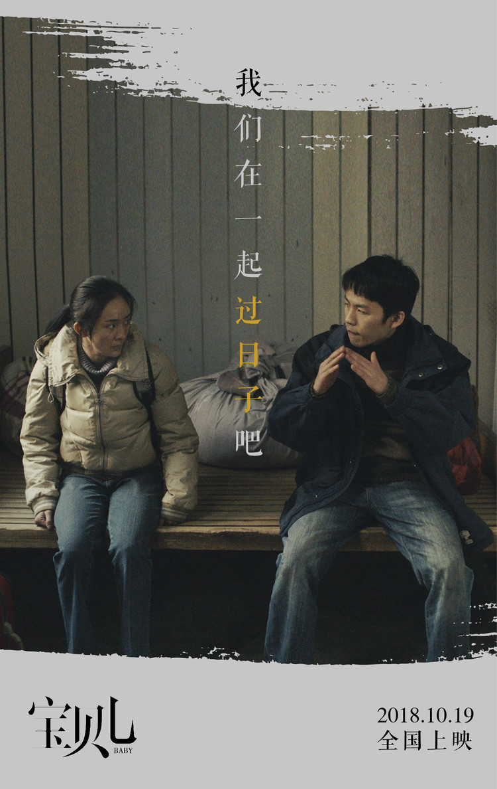
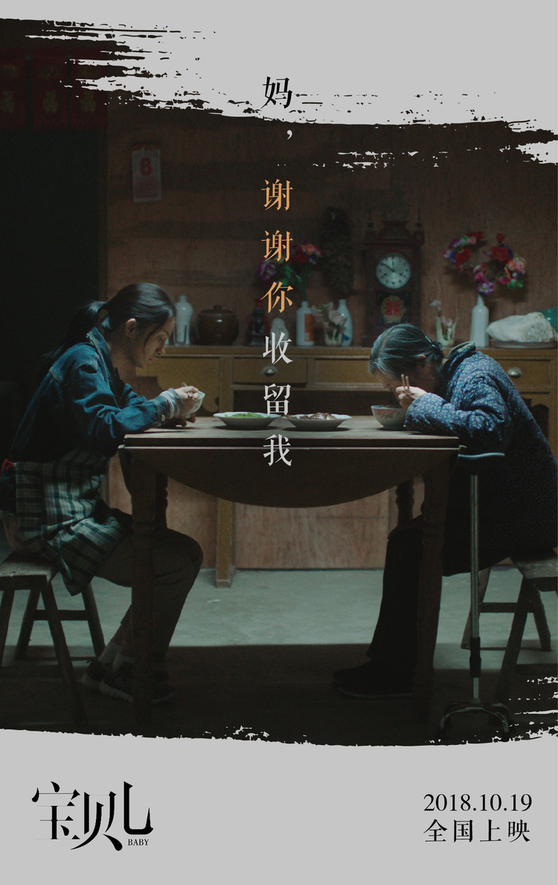